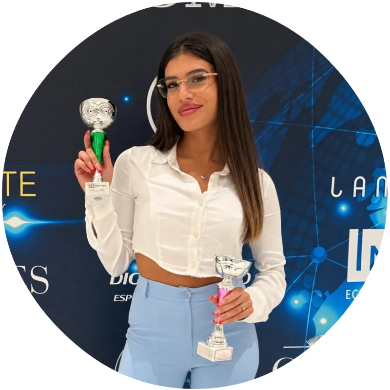
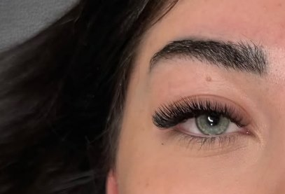
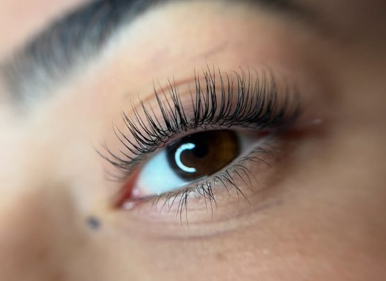
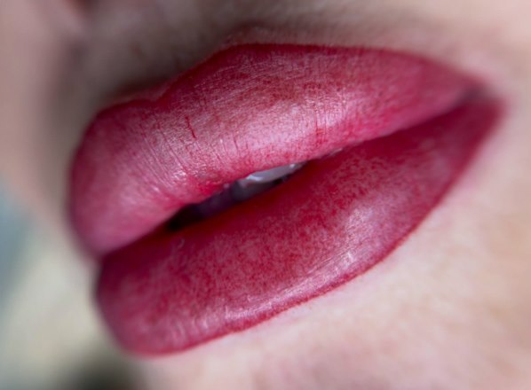
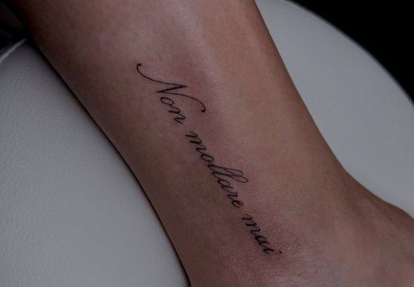

Per chi desidera valorizzare lo sguardo
Per chi desidera ciglia più definite, sopracciglia armoniose e uno sguardo capace di esprimere la propria personalità.
Serena Vicari · Lash Maker & PMU Artist
Trattamenti personalizzati per valorizzare la tua bellezza, attraverso precisione, armonia e cura dei dettagli.
Misilmeri · Palermo
Chi sono

Sono Serena Vicari, Lash Maker & PMU Artist, e mi occupo di trattamenti dedicati alla valorizzazione dello sguardo, dermopigmentazione e tatuaggi Fine Line.
Il mio percorso nasce dalla passione per il mondo della bellezza e dal desiderio di trasformarla in una professione attraverso studio, dedizione e determinazione.
Dietro ogni traguardo ci sono ore di formazione, sacrifici e la volontà di migliorarmi ogni giorno. Il mio logo rappresenta proprio questo percorso: la strada che ho fatto, la crescita che ho scelto e l'amore che metto nel mio lavoro.
Credo in una bellezza autentica, personale e armoniosa, capace di valorizzare ciò che rende unica ogni persona.
Per questo desidero accompagnarti nella scelta del trattamento più adatto alle tue caratteristiche e ai tuoi desideri, dedicando attenzione a ogni singolo dettaglio.
A chi mi rivolgo
Per chi desidera ciglia più definite, sopracciglia armoniose e uno sguardo capace di esprimere la propria personalità.
Per chi desidera valorizzare i propri lineamenti attraverso trattamenti estetici studiati in base alle caratteristiche individuali e alle proprie preferenze.
Per chi desidera esprimere la propria unicità attraverso piccoli tatuaggi delicati, linee sottili e dettagli dal significato personale.
Approccio
L'incontro tra sensibilità estetica, precisione tecnica e passione.
Ogni trattamento nasce dall'ascolto dei tuoi desideri e dalla ricerca di un risultato armonioso e personale.
Comprendere i tuoi desideri e individuare il trattamento più adatto alle tue caratteristiche.
Valorizzare i lineamenti rispettando le proporzioni e l'unicità del tuo viso.
Dedicare attenzione a ogni dettaglio, dalla progettazione all'esecuzione del trattamento.
Ricercare un risultato coerente con la tua personalità e con il tuo modo di sentirti bella.
Servizi
Trattamenti dedicati allo sguardo, alla bellezza e all'espressione personale.

Valorizza il tuo sguardo attraverso un trattamento estetico dedicato alla definizione, alla lunghezza e al volume delle ciglia.
La scelta dell'effetto viene valutata in base alle caratteristiche delle ciglia naturali, alla forma dell'occhio e alle tue preferenze estetiche.
Un dettaglio capace di esprimere la tua personalità.

Un trattamento dedicato alla valorizzazione delle ciglia e delle sopracciglia naturali, per uno sguardo più ordinato, definito e armonioso.
La laminazione permette di lavorare sulla direzione e sulla forma dei peli naturali, rispettando le caratteristiche individuali.

La dermopigmentazione, conosciuta anche come Permanent Make-Up, è una tecnica estetica dedicata alla valorizzazione e alla definizione dei lineamenti.
Attraverso una progettazione personalizzata, il trattamento ricerca un risultato coerente con le caratteristiche del viso e con i tuoi desideri.
Le tecniche specifiche, l'idoneità e le modalità del trattamento vengono approfondite durante la consulenza.

Piccoli dettagli, linee sottili e significati personali.
I tatuaggi Fine Line rappresentano un modo delicato e raffinato di raccontare una storia, custodire un ricordo o esprimere la propria individualità.
Ogni progetto viene valutato tenendo conto del soggetto, della posizione e delle caratteristiche del disegno.
Come funziona
Scrivimi per raccontarmi cosa desideri e ricevere maggiori informazioni sui trattamenti disponibili.
Valutiamo insieme le tue esigenze, le caratteristiche individuali e il trattamento più adatto a te.
Definiamo insieme la proposta più adatta a te e verifichiamo l'idoneità al trattamento.
Concordiamo l'appuntamento e ricevi le indicazioni da seguire prima e dopo il trattamento.
Dove ricevo
FAQ
Con le extension applico ciglia artificiali sulle tue ciglia naturali, mentre con la laminazione lavoro sulle tue ciglia naturali per valorizzarne la forma e la curvatura. Ti consiglio la soluzione più adatta in base alle tue caratteristiche e al risultato che desideri.
Durante la consulenza valuto insieme a te le tue caratteristiche, le tue preferenze estetiche e le eventuali condizioni che possono influenzare la scelta, così da individuare il trattamento più adatto a te.
Non necessariamente. Prima di procedere valuto con te l'idoneità al trattamento, le condizioni della pelle e le eventuali controindicazioni. Quando necessario, posso chiederti un parere medico.
Certo: raccontami la tua idea e valuterò con te la fattibilità del progetto, il disegno e la posizione più adatta.
Puoi scrivermi sul mio profilo Instagram (si apre in una nuova scheda): ti darò tutte le informazioni e concorderemo insieme una consulenza o un appuntamento.
Contatti